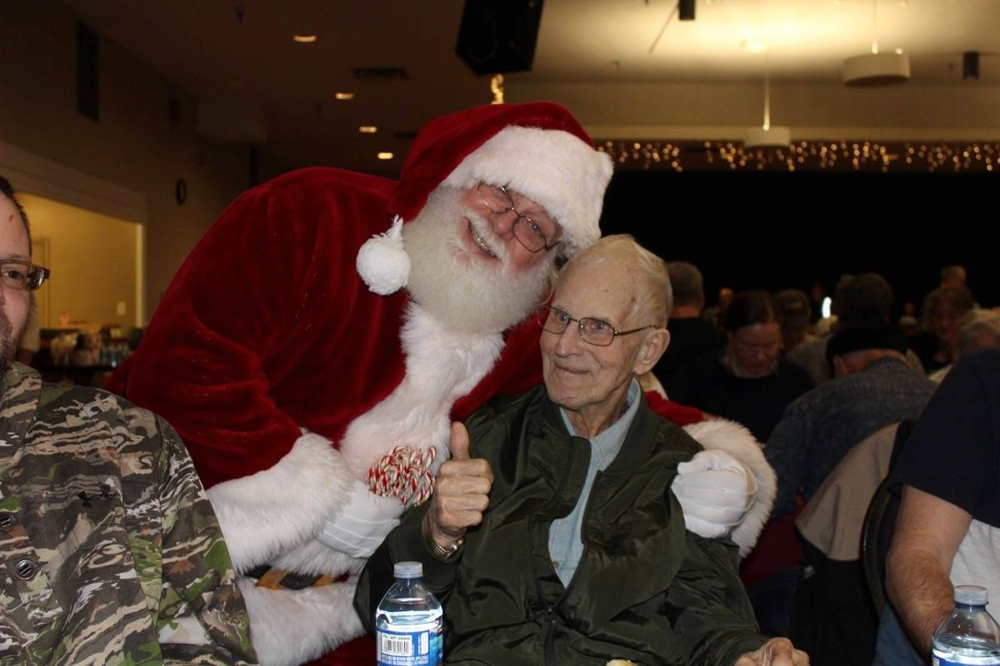

About Earl Naswell
January 21, 1931 – October 6, 2020
Earl Naswell was born in Minnedosa, Manitoba, to John and Mary Naswell. A devoted father of seven children, grandfather of fourteen, and great-grandfather of thirteen, Earl was a kind and hardworking man who made an extraordinary impact on the Comox Valley community. In 1982, Earl began what would become one of Vancouver Island’s most cherished traditions: the Earl Naswell Community Christmas Dinner. What started as a simple act of kindness for a few friends grew into a community-wide event that now serves over 1250 people annually.
